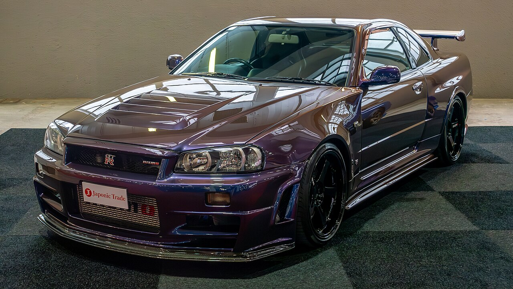

NOCTURNE × FORMULA DRIFT — творческий концепт коллаборации. Официальное партнёрство с серией или трассами не заявляется. События и правила — на сайтах организаторов.

BNR34 / A CULTURAL ICON
04 / MORE THAN METAL
BUILT IN JAPAN. KEPT IN YOUR HEART.
Первый Skyline в игре. Supra на постере. Звук оппозитника, который узнаёшь с закрытыми глазами. У каждой японской легенды есть история — и у тебя с ней тоже.
NOCTURNE MOTORS — цифровой шоурум для тех, кто выбирает собственное ощущение от дороги.
Заводское состояние или продуманный проект? Атмосферник или турбо? Коллекция или машина для выходных? Сначала нужно понять задачу, затем — искать экземпляр.
Документы, геометрия кузова, агрегаты, электроника и история обслуживания. Роторной Mazda и алюминиевой NSX нужны специалисты с опытом именно этих моделей.
Это демонстрационный цифровой автосалон. Модели настоящие, а цены, пробег и статусы придуманы для показа функций. Фото иллюстрируют модель и могут отличаться от указанной версии.
Что происходит с заявкой?＋
Сайт сохранит черновик только в твоём браузере. Ты сможешь скачать файл. Дилеру ничего не отправляется, просмотр не подтверждается и платежи не принимаются.
Можно ли купить машину прямо здесь?＋
Сайт помогает изучить модели и подготовить запрос. Реальная покупка требует продавца, проверки экземпляра, договора и согласования расходов.
Как работают избранное и сравнение?＋
Сохраняй понравившиеся машины и сравнивай до трёх моделей одновременно. Выбор останется на этом устройстве.